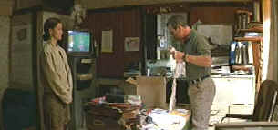

|
Double
Jeopardy/B-,A |
|
Paramount/1999/105/ANA
2.35 |
Double
Jeopardy travels a popcorn paved road of treachery and intrigue
from the coast of Washington to the overwrought
balconies of New Orleans. Plothole repairs are filled with even
more popcorn. So, how
many bags of popcorn can you fit on a Double Jeopardy DVD? The
answer to the question is the key to enjoying this energetic,
but flawed suspense flick.
 |
| Lehman
checks out the goods on Libby. ©Paramount |
Libby Parsons is a wonderful wife and mother living a fantasy life along the shore in Washington. What she doesn't
realize is that her husband's financial empire is held up by corrupt foundations. The totally amoral husband Nick (Didn't you
have an inkling, Libby?) sets up an insurance scam that leaves
Libby holding the murder weapon. (Libby's a heavy sleeper.) It's
a cliché trial, candy-ass jail time, parole, and an attempt to
put her life back together and find her son. Nasty parole
officer Travis Lehman has the job of keeping tabs on Libby, and
he is pretty inept, even for a "hard case." Libby
bolts, which means the movie gets to move to some spiffy
locations, and that's okay with me. New Orleans, through the
lens of cinematographer Peter James is
gorgeous.
Director Bruce Beresford does a good job of
making a bad script look delicious. The pacing and style of
Double Jeopardy are far better than its written origins.
Characters painted in one color are always problematic, and such
is the case with Double Jeopardy. An even bigger problem
is the turn-around made by Lehman. Making in a longer version of
this film sensible director Beresford gave Lehman better
motivations.
If you like Ashley Judd
(Who doesn't?), just watching her offers its own treasure trove
of pleasure. Judd light ups the screen with remarkable
consistency, With only a short filmography to her credit, she
has established a firm screen presence. More Judd por favor!
This time out, Judd gets to flex her muscles playing
Libby, an action
heroine, giving more credence to all those questionable plot
turns than most working actresses could manage. .Tommy Lee Jones
tries hard to bring some charm to the rather ugly part of Travis
Lehman. Bruce Greenwood will do anything as Nick to keep living
the high life.
Detail is outstanding on this widescreen DVD. Look at some of
the party scenes. The many crystals making up the chandeliers
are delineated finely. Keeping with its popcorn heritage, Double
Jeopardy is transferred to DVD with lively, saturated colors.
The Dolby Digital 5:1 surround is active and directional, with
outstanding pans. There's a promotional short included that
little more than some added gloss on this good looking DVD. |
|

The
Feature
Archive has articles ranging from Akira
Kurosawa to Blonde
Bimbos and John
Ford.
The
Exquisite Muse of Zhang Yimou

The powerful image-making of Zhang
Yimou has revealed itself in virtually every film he has made. Coupled
with his remarkable collaboration with actress Gong Li, Zhang's has
built a stunning body of work Click the image to read all about
it.

Looking
for a fix of irreverent flick
dissection. Check out The
Big Combo where four guys rave
and rant about movies.
They may
be judgmental, but that's the point, isn't it. Lots of DVD reviews
plus news and more.
Click on the link to visit the judge's chambers.

A great place for movie lovers and
techies to visit for exchange of ideas. New speedy interface is an
inspiration for more dialogue.
 DVD
Informix is a British site providing a variety of DVD
information, including lots of DVD software. Check it out from
articles to links. DVD
Informix is a British site providing a variety of DVD
information, including lots of DVD software. Check it out from
articles to links.

The
Movie Poster Archive include extensive poster images from the
films of stars like Susan Hayward, Kirk Douglas, Katharine
Hepburn and many more. This month's featured star is Kirk
Douglas.
|